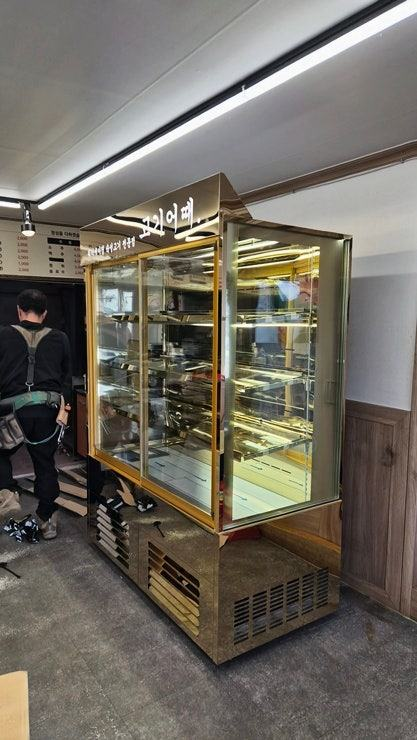
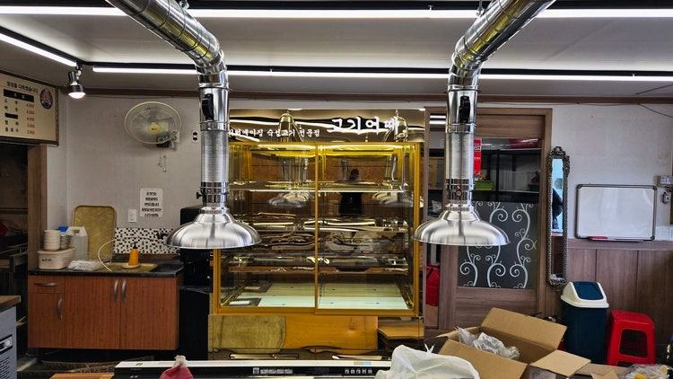
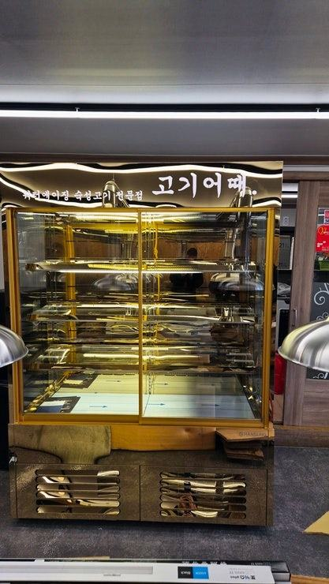
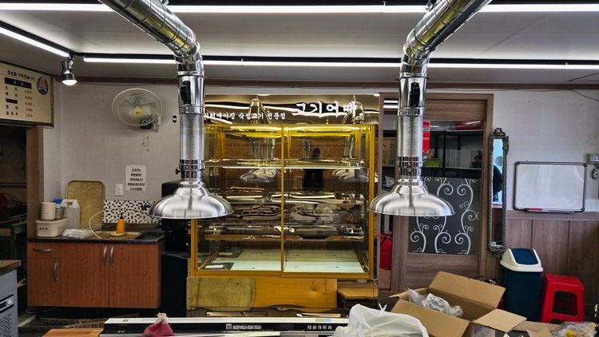
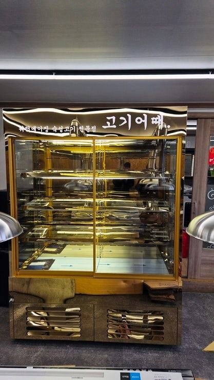
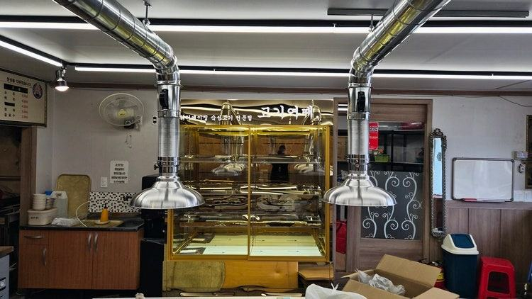
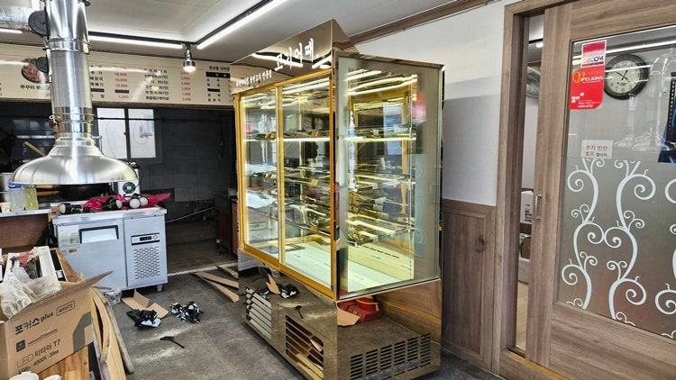
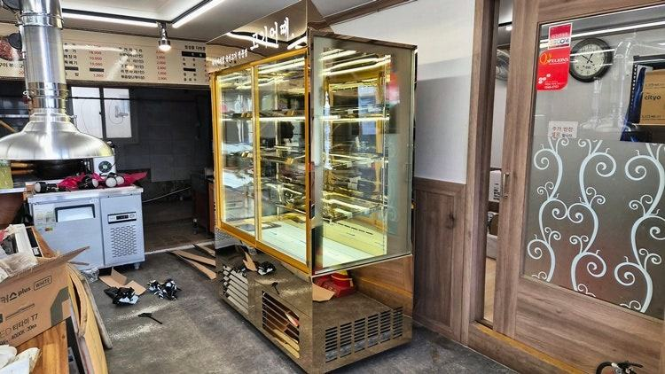
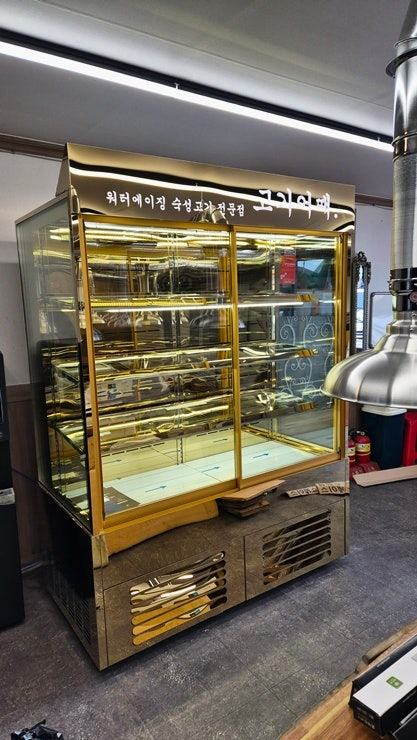
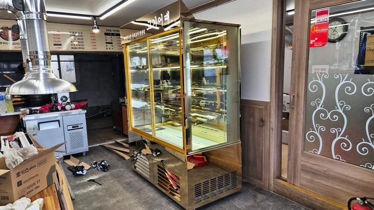

와인(음료)쇼케이스
업소용음료수냉장고 디자인, 색·프레임·조명으로 매장에 녹이는 법

업소용음료수냉장고 디자인은 매장 메인 소재와 외관 색을 맞추고, 프레임을 얇게 해 음료가 주인공이 되게 하며, 조명 색을 매장 조명 톤과 맞추는 세 가지가 핵심입니다. 다만 결로로 유리가 흐려지거나 열 배출 공간이 없으면 디자인이 무색해지니 기능 조건을 먼저 확인한 뒤 외관을 고르세요.
안녕하세요. 카페와 매장 분위기에 맞춰 음료 냉장고를 디자인하는 한성쇼케이스입니다.
인테리어에 공을 들인 카페나 식당 사장님들이 마지막까지 고민하시는 게 음료 냉장고입니다. 원목과 대리석으로 꾸민 공간에 흔한 흰색 음료 냉장고가 서 있으면 그 자리만 따로 노는 느낌이 나거든요.
음료 냉장고는 손님이 직접 문을 여는 경우가 많아 매장에서 가장 눈에 자주 띄는 설비 중 하나입니다.
그만큼 디자인을 잘 맞추면 매장 분위기를 살리는 소품이 되고, 안에 든 음료도 더 잘 팔립니다.
오늘은 업소용음료수냉장고 디자인에서 고를 수 있는 요소들과, 디자인을 정할 때 함께 확인해야 할 기능 조건을 정리해 드리겠습니다.
1. 외관 색과 소재부터 맞추기
가장 먼저 정할 것은 외관 색과 소재입니다. 실버 스테인리스는 깔끔하고 위생적인 인상을, 블랙은 모던하고 무게감 있는 분위기를, 화이트는 밝고 따뜻한 공간에 잘 어울립니다.
카운터 상판이나 주변 가구의 주된 색을 기준으로 고르면 실패가 적습니다.
벽면이나 가구 사이에 매립하듯 넣으면 냉장고가 가구의 일부처럼 보입니다. 다만 이 경우 열이 빠질 통로를 반드시 설계에 넣어야 하니, 디자인 단계에서 설치 방식을 함께 이야기해 주세요.
- 주변 가구와 상판 색 기준으로 외관 색 선택
- 매립형이라면 열 배출 통로 설계
- 슬림형 필요 여부
2. 프레임과 유리, 손잡이
음료 냉장고는 결국 안에 든 병과 캔이 주인공입니다. 문 프레임이 두꺼우면 시야가 답답해 보이니, 프레임을 얇게 하거나 통유리에 가까운 구성으로 내부를 시원하게 보여 주는 것이 좋습니다.
손잡이는 작아 보여도 인상을 크게 바꿉니다. 바깥으로 튀어나온 손잡이 대신 프레임에 홈을 낸 매립형을 쓰면 전면이 매끈해지고 통로에서 걸리는 일도 줄어듭니다.
선반도 디자인 요소입니다. 투명한 유리 선반을 쓰면 위아래 칸이 이어져 보여 진열이 가벼워 보이고, 금속 선반은 병이 많이 올라가는 매장에서 튼튼하고 깔끔한 인상을 줍니다.


3. 조명 색과 로고 각인
내부 LED 조명 색은 매장 조명 톤과 맞추는 것이 기본입니다. 따뜻한 조명 아래 있는 매장에 차가운 흰빛 냉장고가 있으면 그 부분만 튀어 보입니다.
반대로 음료 라벨 색을 선명하게 보여 주고 싶다면 밝은 주백색 계열이 무난합니다.
상단이나 전면에 상호와 로고를 새기면 냉장고가 매장 홍보물이 됩니다. 브랜드 컬러가 있는 매장이라면 조명과 로고 색을 맞춰 하나의 이미지로 묶어 보세요.
4. 디자인을 망치는 기능 문제
아무리 예쁜 음료 냉장고도 유리에 김이 서려 안이 안 보이면 오히려 매장이 지저분해 보입니다. 매장 습도가 높거나 문을 자주 여는 곳이라면 결로를 줄이는 구조인지 꼭 확인하세요.
열 배출 공간이 없어 콤프레셔 소리가 커지는 것도 흔한 문제입니다. 조용한 카페일수록 소음은 디자인만큼 분위기를 좌우하니, 외관을 고르기 전에 설치 자리와 열 배출 방향부터 정하는 순서를 지켜 주세요.
- 결로 방지 구조 확인
- 열 배출 방향과 공간
- 소음 수준
체크리스트
- 외관 색과 소재
- 매립·단독 설치 방식
- 프레임 두께와 유리 구성
- 손잡이 형태
- 조명 색과 로고 각인
- 결로·열 배출·소음 조건
현장에서 자주 보는 경우: 쇼케이스를 디자인만 보고 마지막에 정할 때
매장 인테리어를 준비하는 사장님들 중 쇼케이스를 디자인이나 색상만 보고 마지막에 급하게 정하시는 경우가 많습니다.
정육점 상담 사례를 보면, 이렇게 고른 쇼케이스 내부에 성에가 차거나 유리에 김이 서리면 인테리어를 아무리 고급스럽게 꾸며도 매장이 청결해 보이지 않는다는 문제가 생겼습니다.
뒤늦게 바꾸려면 비용과 시간이 두 배로 들기 때문에, 디자인을 정하기 전에 냉각 방식과 배치, A/S를 먼저 확인하시라고 안내합니다.
벽면 치수에 맞춘 맞춤 제작을 쓰면 버려지는 공간 없이 매장 동선에 맞출 수 있습니다.










자주 묻는 질문
음료 냉장고 외관 색을 원하는 색으로 바꿀 수 있나요?
맞춤 제작에서는 실버, 블랙, 화이트 같은 기본 색 외에도 매장 톤에 맞춰 상담할 수 있습니다. 인테리어 시안이나 컬러 샘플을 보내 주시면 어울리는 조합을 제안해 드립니다.
가구 안에 매립하면 고장이 잘 나지 않을까요?
열이 빠질 통로 없이 막아 두면 콤프레셔에 무리가 갈 수 있습니다. 매립을 원하시면 설계 단계에서 배출 방향과 통로를 함께 잡아 드립니다.
로고 각인은 어디에 할 수 있나요?
보통 상단 패널이나 전면에 새기며, 냉장고 구조와 크기에 따라 위치가 달라집니다. 로고 파일을 보내 주시면 들어갈 수 있는 위치와 크기를 안내해 드립니다.
매장 조건에 맞춰 만드는 한성쇼케이스
원하시는 제품 사진과 설치할 공간 사진만 보내 주셔도 매장에 맞는 구성을 추천해 드립니다.
- 전국 240여 개 A/S 전담 센터 운영
- 본사 대량 자재 매입으로 품질 대비 합리적인 가격
- 유럽제·삼성 냉각 콤프레셔 적용
- 국내 최초 쇼케이스 전문 디자이너 상주
매장 폭과 원하는 진열 구성을 알려 주세요. 실측과 견적을 안내해 드립니다.
031-986-2458